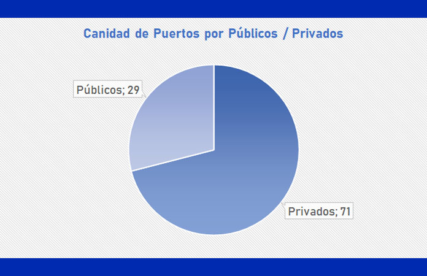
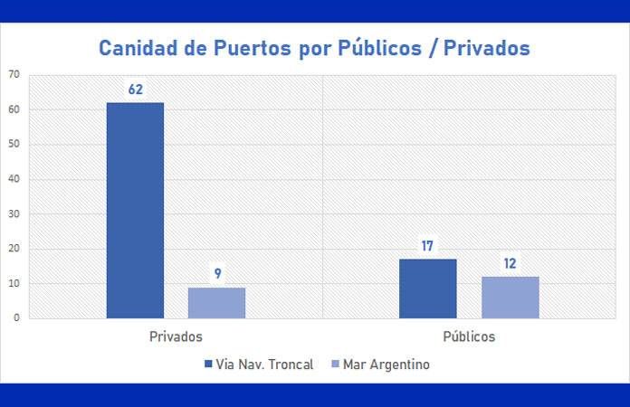

Relevamiento de Puertos en Argentina
La cantidad total de puertos tanto fluviales como marítimos en Argentina es de 100. Cabe destacar que la información fue recabada de la página oficial de Agenda de Puertos oficiales de Argentina. Asimismo, se encuentra una mayoría de puertos privados (71) en detrimento de los públicos (29). Además, si se considera la cantidad de toneladas operadas en el 2021, también la cantidad en puertos privados (114.905.889 t) duplica a los públicos (53.199.843 t).

Argentina cuenta con 79 puertos en la Hidrovía Paraná- Paraguay y 21 en el litoral
del Mar Argentino.
De este total, cabe destacar que la mayoría de puertos en la hidrovía son privados
mientras que los lindantes al Mar Argentino son, en mayor parte, públicos. En la
hidrovía, 62 puertos son privados y 17 públicos. Mientras que en el Mar Argentino 9 son
privados y 12 públicos.

En cuanto a tipos de buques, se destacan en cantidad los Panamax (25 en total),
Barcaza (19) y Bulk Carrier (8). Es importante resaltar que muchos puertos operan con
más de un tipo de buque y es por eso que los números de tipos de barcos son mayores al
número de puertos.
PUERTOS POR PROVINCIA:
Sobre las provincias que cuentan con más cantidad de puertos, Santa Fe lidera la lista
con 33 puertos, 31 privados y 2 públicos. Le sigue Buenos Aires con 30 en total, 20
privados y 10 públicos. En tercer lugar, Entre Ríos suma 12 puertos, 8 privados y 4
públicos.
Sólo tomando el relevamiento de los puertos privados, se puede detectar que la mayor parte de los mismos operan en el sector agroindustrial (25) y de energía/hidrocarburos (21). Le siguen los líquidos químicos (4) y el sector del acero (3) y de la madera (3).
En cuanto a las toneladas operadas en el 2021, la mayor parte de los puertos (36) -tanto privados
(24) como públicos (12)- contaron con menos de 500.000 t.
Si bien de los teus operados en 2021 se encontraron pocos datos en la página oficial, la mayoría
de los puertos públicos (5) contaron hasta 25.000 mientras que la mayoría de los privados (2)
contaron con teus de 25.000 a 50.000.
Sobre los pasajeros transportados en 2021, tampoco se encuentran gran cantidad de datos oficiales.
Ushuaia es el puerto con mayor cantidad de personas transportadas. Cabe destacar que los tres puertos
relevados son públicos.
Por otra parte, según la información oficial sobre cruceros turísticos por temporada que operan en
el Puerto de Buenos Aires, la temporada 2022-2023 (de octubre 2022 a abril 2023) tendrá un total de
122 cruceros. Asimismo, los pasajeros transportados serán un total de 370.940. Las principales
procedencias de los cruceros serán Montevideo, Punta del Este y Puerto Madryn. Mientras tanto, los
principales destinos serán Montevideo, Río de Janeiro y Puerto Madryn.